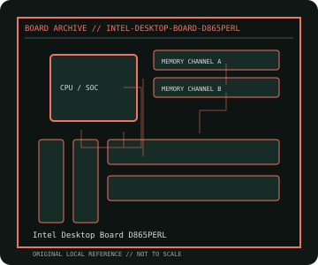

[ INDIVIDUAL COMPONENT // MOTHERBOARDS ]
Intel Desktop Board D865PERL
Intel Pentium 4 / Pentium 4 Extreme Edition desktop platform, 2003. This record documents the named model and its documented variants; confirm the PCB revision, submodel and firmware on the physical unit.

REVISION WARNING: Similar model names and PCB revisions may have different processors, connectors or firmware. Read the silkscreen and assembly code; use the support files for that exact board variant.
Specifications
| Catalog subcategory | Legacy Intel desktop platforms |
|---|---|
| Exact model / era | Intel Desktop Board D865PERL — Intel Pentium 4 / Pentium 4 Extreme Edition desktop platform, 2003 |
| CPU and socket / SoC | Socket 478 Intel Pentium 4 and Celeron processors within the board's FSB, thermal and BIOS limits |
| Chipset / platform | Intel 865PE with ICH5R |
| Memory | Four 184-pin DDR DIMM sockets; dual-channel DDR 266/333/400; up to 4 GB supported capacity |
| Slots and connectivity | ATX; AGP 8x, five PCI; two SATA 1.5 Gb/s plus two IDE channels, USB 2.0, IEEE 1394, Intel PRO/100 VE Ethernet and onboard audio |
| Firmware | Intel legacy BIOS; use D865PERL-specific recovery and BIOS instructions, not files for similarly named Intel 865 boards. |
Compatibility and revision notes
Check processor FSB and thermal design limits against the D865PERL TPS; DDR modules must be installed in validated pairs for dual-channel operation.
Socket, connector shape and family branding alone do not establish compatibility. Verify the exact processor list, minimum BIOS, memory population table, power input, dimensions, and shared-lane behavior in the cited manual before installation.
Preservation and repair
Check the socket's retention frame, CPU VRM capacitors and AGP slot solder joints. Photograph the rear FireWire/USB port layout and preserve the board ID and BIOS settings.
For archival preservation, photograph the PCB, labels, connectors and included accessories before cleaning. Record serial/date codes, firmware versions, known faults, prior repairs and test conditions; use ESD-safe handling and do not power a board with loose conductive hardware beneath it.
Sources & further reading
- Intel Desktop Board D865PERL — product/manual referenceModel-specific platform, board layout and interface reference.
- Intel Desktop Board D865PERL — support and firmware resourcesSupport documentation; match the PCB revision, CPU support list and firmware release to the physical board.
Manufacturer/model documentation is the primary reference. Where vendor support is archived, match its revision notes to the board and do not cross-flash firmware from a similar product.